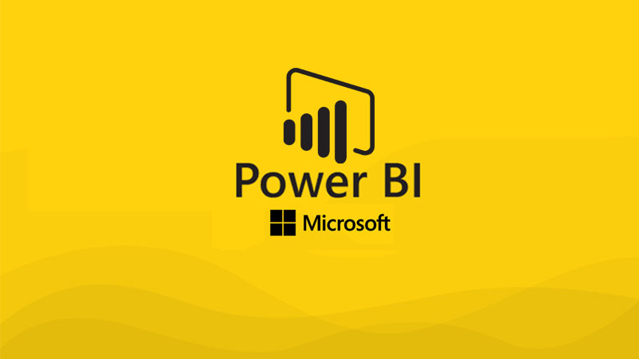

Data Clearing in SQL

In this project we take raw housing data and transform it in SQL Server to make it more usable for analysis.
Data cleaning typically involves writing queries to identify and address issues with the data. This might include:
• Removing duplicates: Duplicates can skew results and lead to incorrect conclusions. SQL queries can be used to identify and remove duplicates from tables or views.
• Handling missing values: Missing values can be replaced with appropriate values, such as the mean or median, or dropped entirely if they represent a small portion of the data.
• Standardizing values: Inconsistent values, such as misspellings or variations of the same value, can be standardized using SQL queries.
• Validating data: SQL queries can be used to check for data that falls outside of expected ranges or patterns, allowing for further investigation or correction.
• Removing outliers: Outliers can skew results and make analysis more difficult. SQL queries can be used to identify and remove outliers from the data.
COVID-19
Data Exploration

In this project we are using the global data of COVID-19 pandemic for data exploration.
The data exploration typically involves querying the data using SQL commands such as SELECT, FROM, WHERE, and GROUP BY to extract relevant data from tables or views. The results of these queries can then be used to generate descriptive statistics such as counts, sums, averages, and standard deviations.
Visualizations are also an important part of data exploration, as they can provide a quick and intuitive understanding of the data.
SQL-based visualization tools such as Tableau, Power BI, or QlikView can be used to create charts, graphs, and other visualizations that allow analysts to identify trends and outliers in the data.
Tableau Projects

Welcome to my Tableau projects! As a Data Analyst enthusiast, I am excited to share with you my latest creations using the powerful and versatile Tableau tool. My projects range from exploratory data analysis and dashboards to interactive visualizations that help communicate insights and drive data-driven decision-making. I hope you find my projects informative and inspiring, and I look forward to sharing my passion with you.
Power-BI Projects

Welcome to my Power BI projects! As a Data Analyst enthusiast, I am excited to share with you my latest creations using the powerful and versatile Power BI tool. My projects range from exploratory data analysis and dashboards to interactive visualizations that help communicate insights and drive data-driven decision-making. I hope you find my projects informative and inspiring, and I look forward to sharing my passion with you.